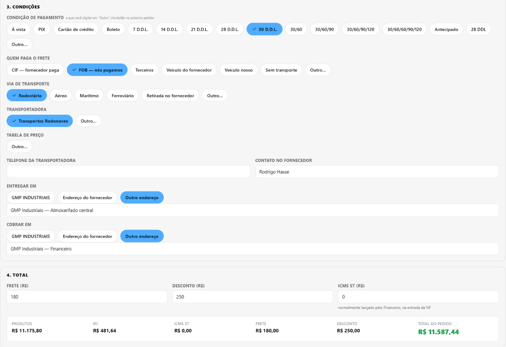
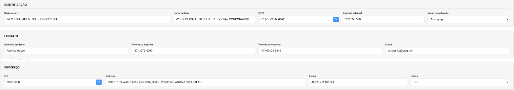
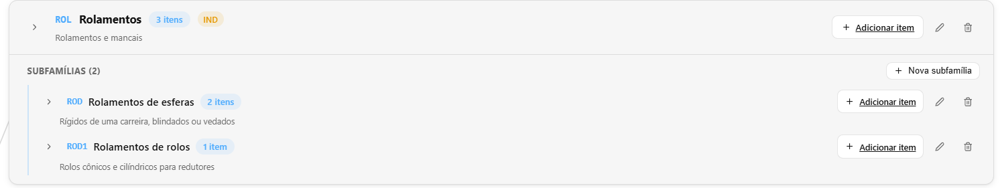
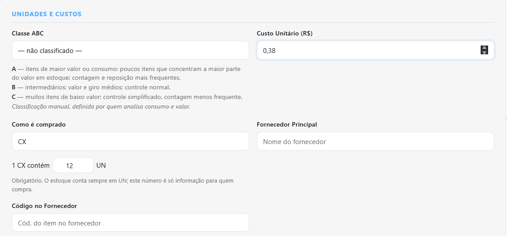
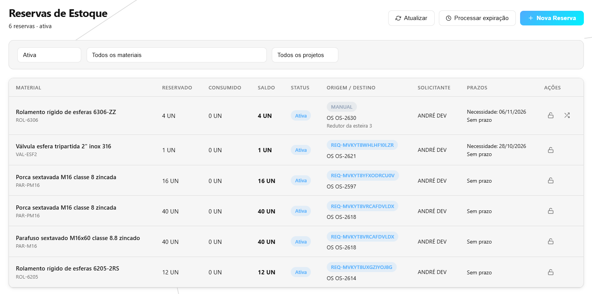

O que foi feito no sistema nesta semana
Semana de 04/10 a 10/10/2026 · CRM GMP Industriais
O pedido de compra passou a sair em PDF no formato do documento da GMP, o fornecedor ganhou uma ficha completa que se preenche pelo CNPJ e pelo CEP, e as configurações de todos os módulos foram reunidas numa tela só. Por baixo, a maior parte do esforço foi na requisição de material: duas pessoas mexendo na mesma requisição ou no mesmo material ao mesmo tempo não separam nem entregam mais a mesma peça duas vezes, e documentos da empresa deixaram de abrir sem login. Foram cerca de 32 horas de trabalho, mais da metade na requisição de material.
O que você já pode ver na tela
O pedido de compra sai em PDF, no papel da GMP
Onde: Compras → Pedidos de Compra, botão “Documento (PDF)” em cada linha da lista e dentro do pedido salvo.
Antes: o pedido existia no sistema, mas o documento que vai para o fornecedor tinha de ser montado fora dele.
Agora: um clique baixa o PDF pronto para anexar no e-mail: logo e dados da GMP, dados do fornecedor, faturamento, condições de pagamento e frete, a tabela de itens com IPI, os totais, o local de entrega e as linhas de assinatura de Compras e da Diretoria. Pedido longo continua na folha seguinte repetindo o cabeçalho da tabela, e cada folha diz “Folha X/Y” e quem imprimiu. O valor unitário sai com as casas que tiver, então quantidade × preço bate com o total da linha. Em Configurações → Geral → Empresa entraram a Inscrição Estadual e uma nota legal opcional, que sai no fim do documento.

Pedido de compra com condições, IPI e totais completos
Onde: Compras → Pedidos de Compra → Novo Pedido (ou abrindo um pedido). E em Almoxarifado → Recebimentos → Novo recebimento → Por Pedido de Compra.
Antes: o pedido guardava fornecedor, datas, itens, quantidade e preço. Cada item pedia a sua própria data de entrega, e o total era uma soma simples, sem IPI, frete nem desconto.
Agora: o pedido tem uma previsão de entrega só, do pedido inteiro. Ganhou condição de pagamento, frete, IPI, desconto e ICMS-ST, e mostra os totais (produtos, IPI, encargos e total geral) calculados do mesmo jeito que na cotação. Os dados do fornecedor ficam guardados no pedido: mudar o cadastro depois não muda o pedido já feito. No recebimento pelo pedido, ao escolher o pedido aparece o quadro do fornecedor e das condições — sem os preços.

Ficha do fornecedor que se preenche sozinha pelo CNPJ e pelo CEP
Onde: Compras → Fornecedores → Novo Fornecedor, ou o lápis de editar na lista.
Antes: o botão “Novo Fornecedor” e o lápis de editar não abriam nada. Endereço, cidade, estado e CEP digitados no cadastro se perdiam, e havia um telefone só. Em Fornecedores homologados, “Remover do grupo” dizia que tinha removido e não removia.
Agora: a ficha abre completa. Digitando o CNPJ e saindo do campo, razão social e endereço vêm sozinhos; digitando o CEP, vêm rua, bairro, cidade e estado — sem apagar o que já foi digitado. São dois telefones, o da empresa e o do vendedor, e os dois aparecem na lista e no Excel. “Remover do grupo” passou a remover.

Todas as configurações numa tela só, com uma aba por módulo
Onde: Administrativo → Configurações.
Antes: as configurações estavam em três telas, em três menus diferentes, com abas misturadas (empresa, e-mail, backup e modelo de proposta lado a lado). Ao recarregar a página, a tela voltava para a primeira aba.
Agora: uma barra no alto tem um botão por módulo — Geral, Comercial, Almoxarifado, Operacional e os demais — e cada pessoa vê só os módulos a que já tinha acesso. As configurações do Almoxarifado e da Fábrica abrem ali dentro. A aba aberta fica guardada no endereço da página: recarregar ou mandar o link abre no mesmo lugar.

Cadastro de material mais claro: subfamílias e “1 CX contém 12 UN”
Onde: Administrativo → Configurações → Almoxarifado → Famílias; e Almoxarifado → Materiais → Novo Material.
Antes: não havia como cadastrar uma subfamília pela tela, ela sempre aparecia com “0 itens” e o filtro por subfamília na lista de materiais não trazia nada. No cadastro do material havia três unidades e dois “fatores de conversão” que ninguém entendia, e a classe ABC não tinha explicação.
Agora: a aba Famílias mostra uma árvore: cada família com as suas subfamílias dentro, o botão “Nova subfamília” e a contagem real de materiais. O filtro de Materiais funciona por subfamília. No material, o campo virou a frase que a pessoa diria: “Como é comprado: 1 CX contém [12] UN”, com o aviso de que o estoque conta sempre na unidade de medida. A classe ABC ganhou uma legenda ao lado (A — maior valor ou consumo; B — intermediários; C — muitos itens de baixo valor).


Requisição: devolver à prateleira o que não vai sair da caixa
Onde: Almoxarifado → Requisições (almox.) → abrir uma requisição separada; e Almoxarifado → Reservas.
Antes: se a peça separada quebrava na caixa, se perdia ou era a peça errada, o almoxarife não tinha como tirá-la da caixa — só o administrador resolvia, excluindo a requisição inteira. Na tela de Reservas, a reserva de uma requisição não dizia de qual requisição era, e qualquer pessoa podia liberá-la.
Agora: cada item com material na caixa tem o botão “Devolver à prateleira”: o almoxarife diz quanto e por quê, e a caixa diminui. Uma requisição que voltou um passo com material ainda na caixa mostra “Reabrir separação”, em vez de começar do zero. Na tela de Reservas aparece o número da requisição dona da reserva, e quem não pode liberar não vê o botão.


O que foi feito por baixo — e por que importa
Parte do trabalho não muda a aparência das telas: é o “motor” que faz as contas e guarda as informações. Quando ele erra, o erro aparece depois, em forma de estoque que não bate ou de material que some. Esta semana, no motor:
Duas pessoas na mesma requisição não levam a mesma peça duas vezes
O problema: quando duas pessoas do almoxarifado — ou a mesma pessoa em duas abas — mexiam na mesma requisição no mesmo instante, cada tela dizia “feito” e o resultado não era o que nenhuma delas pediu: com 4 pedidas, saíam 6. Uma requisição que pediu 6 de um material com 4 na prateleira conseguia “separar” 6. Duas requisições separavam as mesmas 4 peças. E uma requisição aprovada podia passar na frente de quem já esperava aquele material na fila. É como dois caixas vendendo o último item da prateleira ao mesmo tempo.
O que foi feito: os gestos numa mesma requisição (separar, entregar, liberar para retirada, encerrar, excluir) passaram a acontecer um depois do outro. A separação não aceita mais do que existe na prateleira, e a tela já diz o máximo que dá para separar. O material que está na caixa de uma requisição só sai pela entrega dela — uma saída avulsa, uma perda ou um ajuste não o levam mais. E o material que chega vai para quem esperava, na ordem da fila.
O que isso evita: peça entregue em dobro, caixa separada que some antes da retirada e estoque que não bate com a prateleira.
Requisição que ficava presa no meio do caminho
O problema: quem pediu material pelas telas do Comercial, Compras, Financeiro, Fábrica ou Frota via o botão “Cancelar Requisição” numa requisição já reservada, mas clicar dava erro — e o material ficava preso até alguém do almoxarifado cancelar. Uma requisição acima do limite de valor, já em separação, voltava a “Aguardando aprovação de valor” se o custo do material subisse, e dali nenhum botão dava certo. E a reserva de uma requisição podia ser gasta por fora, deixando a requisição “reservada” sem ter recebido nada.
O que foi feito: o cancelamento funciona em todos os casos em que o botão aparece, e solta a reserva. A aprovação de valor vale até o começo da separação. A reserva de uma requisição só sai pela própria requisição.
O que isso evita: material parado à toa, requisição sem saída e pedido de ajuda ao administrador para destravar.
O estoque não recusa mais o que existe por causa de uma casa decimal
O problema: material comprado em quilo, metro ou litro entra em frações. Três notas de 0,7 kg, 0,2 kg e 0,1 kg davam, na conta do computador, 0,99999… — não 1. Uma saída de 1 kg era recusada com “Saldo insuficiente”, e a entrega da requisição ficava presa com o material na prateleira.
O que foi feito: as quantidades passaram a ser guardadas arredondadas, e as comparações aceitam essa sobra minúscula. Os saldos antigos com esse resíduo podem ser acertados de uma vez.
O que isso evita: “saldo insuficiente” com o material na mão, e requisição que nunca fecha.
Documentos da empresa só abrem para quem está logado
O problema: a proposta comercial, o PDF da OS, o modelo de contrato, as cotações de fornecedor, os comprovantes de viagem, as imagens do chat e as fotos de perfil abriam por um endereço direto, sem login. Quem soubesse o endereço e trocasse um número baixava a proposta de outro cliente, com itens e preços.
O que foi feito: todos esses arquivos passaram a exigir login, e as imagens abrem por um endereço que vence depois de um tempo. As fotos enviadas são conferidas pelo tipo verdadeiro do arquivo, não pelo nome.
O que isso evita: preço, cliente e contrato da GMP circulando fora da empresa por um link copiado.
PDFs que falhavam sem motivo e mensagens de erro em português
O problema: quando duas pessoas geravam PDF ao mesmo tempo, às vezes um falhava. O PDF da OS demorava e dizia “Página 1 de 1” num documento de seis páginas; OS com barra ou aspas no número dava “Erro ao gerar PDF”. E um arquivo grande demais mostrava “Erro interno”, sem dizer o que fazer.
O que foi feito: os PDFs entram numa fila e saem um de cada vez; o da OS ficou cerca de dez vezes mais rápido, com “Página X de Y” certo em toda folha, e aceita qualquer número de OS. Arquivo acima do limite mostra “Arquivo grande demais (máximo 10 MB)”, e os erros do almoxarifado chegam à tela com a mensagem certa.
O que isso evita: clicar de novo sem saber por quê, e chamar suporte por um erro que a própria tela poderia explicar.
Também foi acertada a instalação do sistema num computador novo, que falhava ao preparar algumas das listas de pedidos, propostas e famílias de produto.
Para onde foi o tempo
Cerca de 32 horas de desenvolvimento nesta semana.
Tempo por atividade
| Atividade | Horas |
|---|---|
| Requisição de material: separação, entrega, caixa, reservas e cancelamento | 17 h |
| Pedido de compra: entrega, condições, totais e documento em PDF | 5 h |
| Fornecedor, configurações por módulo, famílias e cadastro de material | 3 h |
| Estoque com casas decimais | 3 h |
| Documentos só com login | 2 h |
| PDFs e mensagens de erro | 2 h |
| Total | 32 h |
Foi uma semana de motor. As telas novas são a parte rápida — boa parte delas reaproveitou o que já existia por baixo —, e por isso ocupam pouco das horas mesmo sendo seis novidades. Mais da metade do tempo foi na requisição de material, onde os erros só aparecem quando duas pessoas agem ao mesmo tempo: são difíceis de ver e caros quando acontecem, porque viram peça entregue em dobro. Quase dois quintos foram nas conferências automáticas: são robôs que repetem centenas de situações a cada mudança — duas entregas no mesmo instante, a nota que chega enquanto alguém separa — para que o que já funciona não quebre escondido. Foi assim que apareceu, antes de chegar a quem usa, uma segunda entrega que levava as mesmas peças já separadas para outra requisição. O resto foi planejar cada mudança e atualizar os manuais.
As horas são estimadas pelo registro do trabalho salvo ao longo da semana. Pesquisa, conversas e testes feitos à mão não entram — o número real é maior.
Quer conferir?
- Abra Compras → Pedidos de Compra e clique em “Documento (PDF)” na linha de um pedido. Veja o cabeçalho da GMP, os itens com IPI e os totais.
- Na mesma tela, clique em Novo Pedido, escolha o fornecedor, lance dois itens e um frete: os totais se recalculam na hora.
- Abra Compras → Fornecedores → Novo Fornecedor, digite um CNPJ e saia do campo; depois apague o endereço, digite um CEP e saia do campo.
- Abra Administrativo → Configurações, clique em Almoxarifado e depois em Famílias. Clique em “Nova subfamília” numa família.
- Abra Almoxarifado → Materiais → Novo Material, em “Como é comprado” escolha CX e veja a frase “1 CX contém … UN”.
- Abra Almoxarifado → Requisições (almox.), abra uma requisição já separada e clique em “Devolver à prateleira” num item. Depois abra Almoxarifado → Reservas e veja o número da requisição em cada reserva.